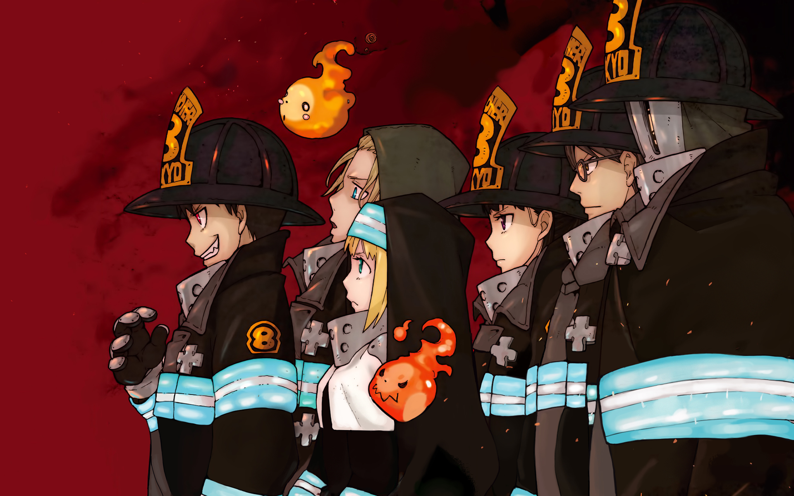

Shinra Kusakabe es un joven pirocinético de tercera generación que ganó el apodo de "Huellas del Diablo" por su habilidad para encender sus pies a voluntad. Se une al Escuadrón Fire Force 8, que está compuesto por otros usuarios de llamas mientras trabajan para extinguir cualquier Infernal que encuentren. Cuando aparece una facción que está creando Infernales, Shinra comienza a descubrir la causa de un misterioso incendio que mató a su familia 12 años atrás.